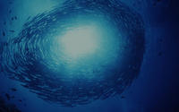

La mer n'est pas un puits sans fond. 70% de notre planète bleue est recouverte par les océans et les mers. Pendant des siècles, l'humanité a considéré que l'océan était une ressource inépuisable, à même de nous nourrir et d'absorber nos déchets sans discontinuer. |
 |
Sur chaque océan, chaque jour, trop de navires traquent des poissons de moins en moins nombreux, alors qu'ils sont essentiels à la chaîne de la vie dans les océans c'est pourquoi cette action est pour que les formes de vie marine soient abondantes pour les générations futures.